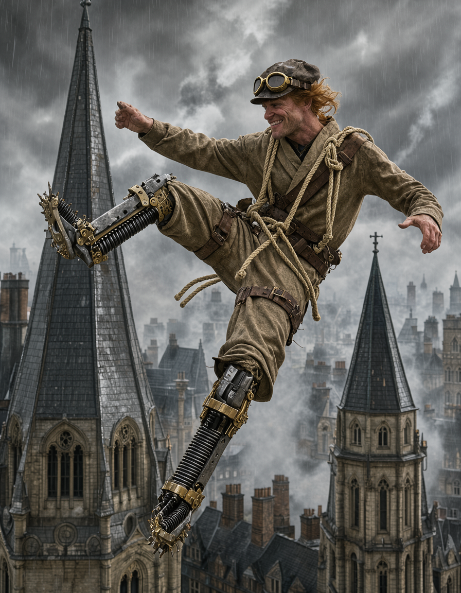
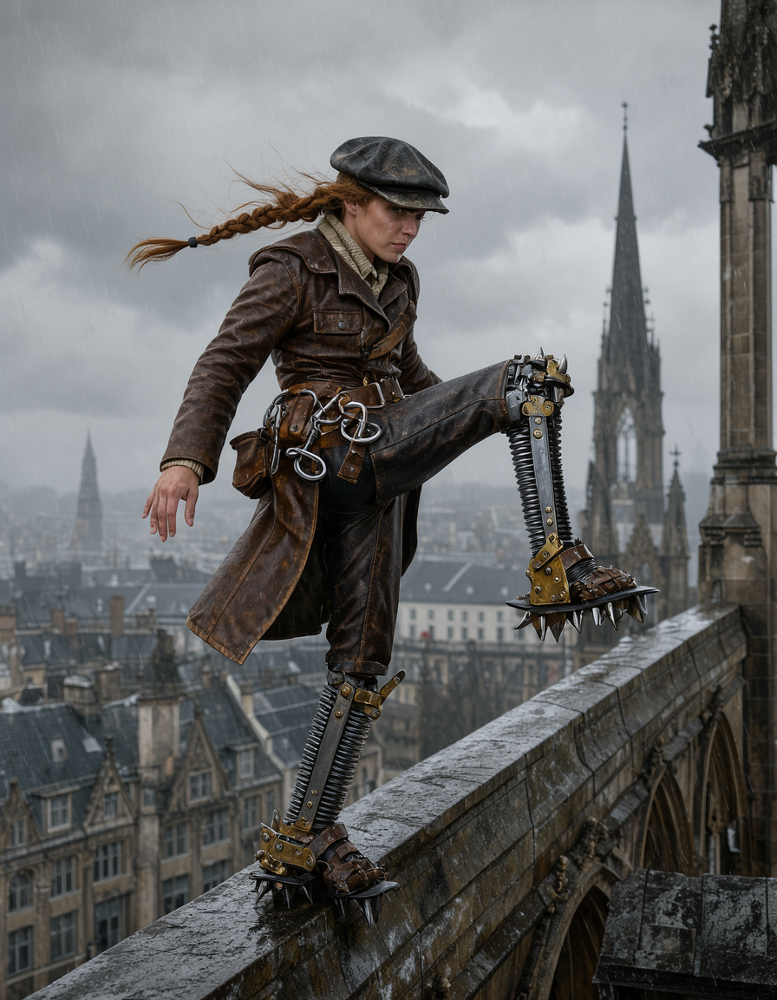
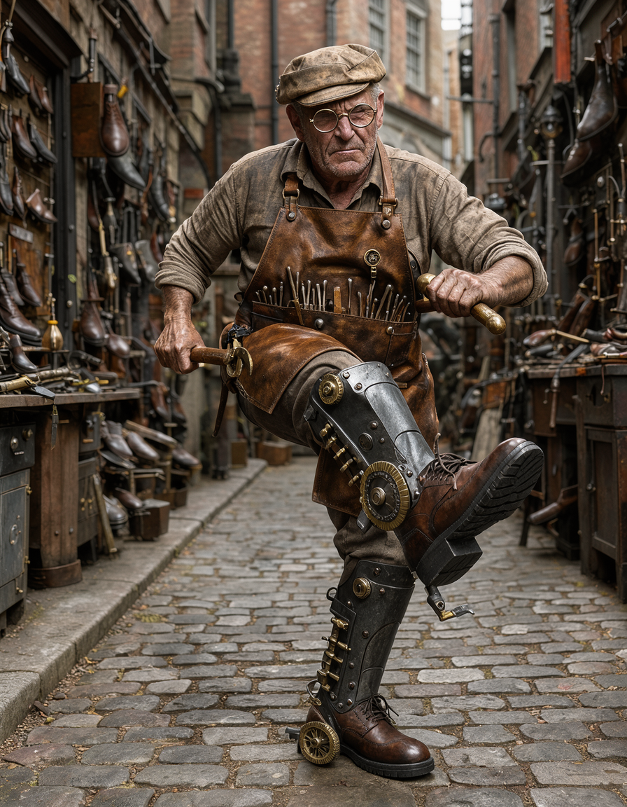
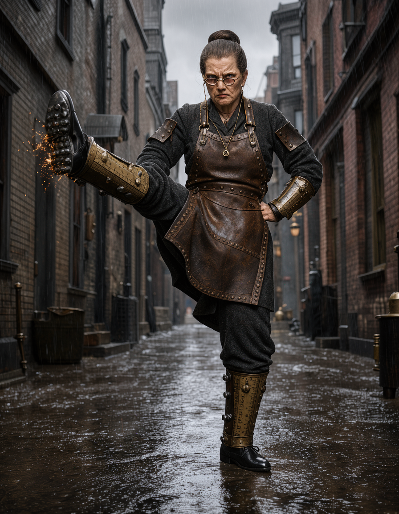
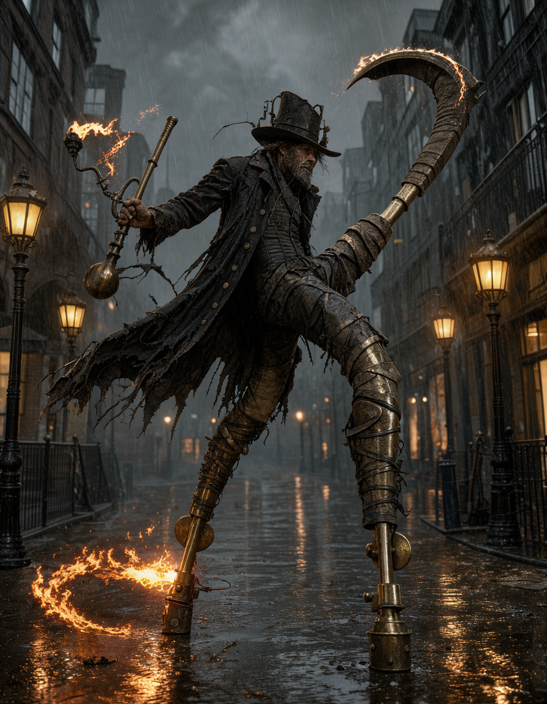
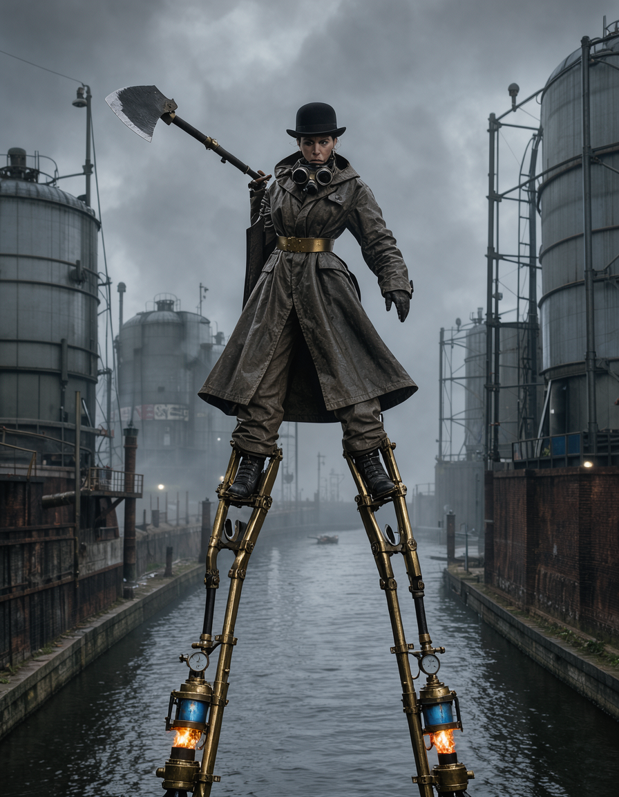
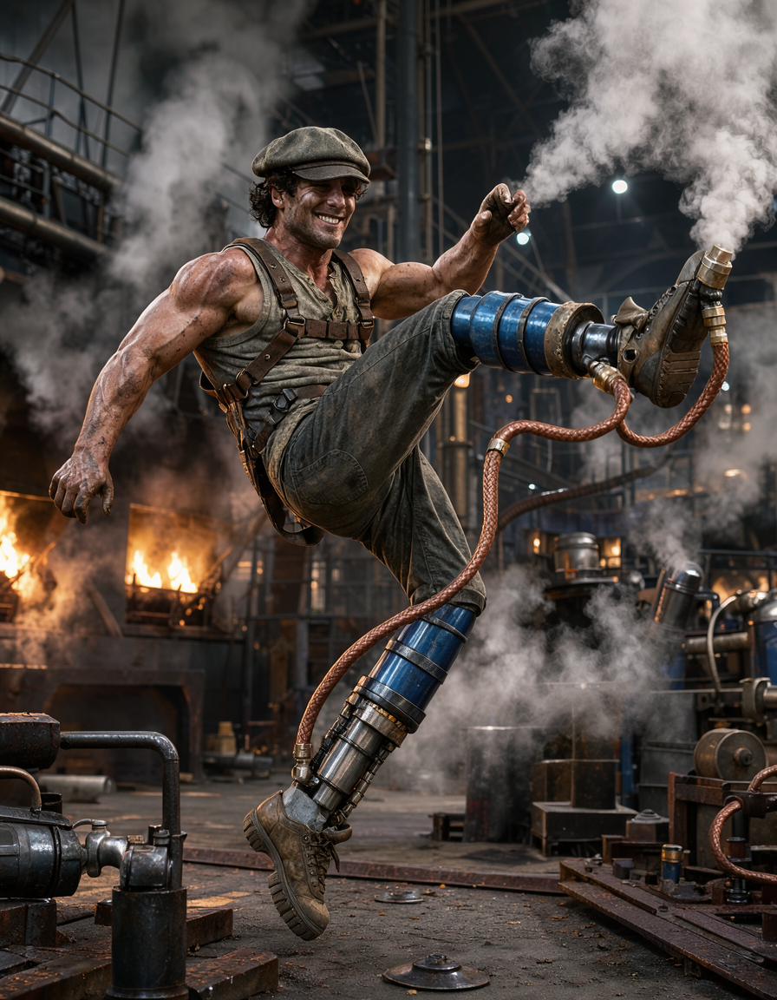
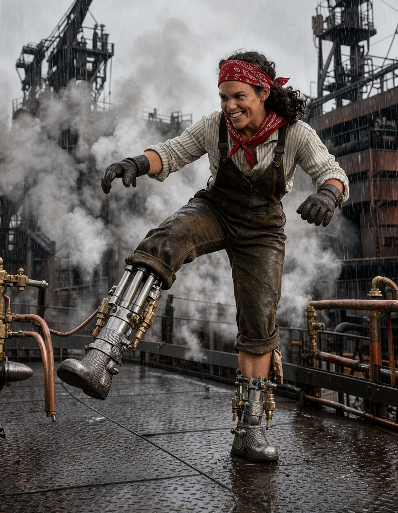
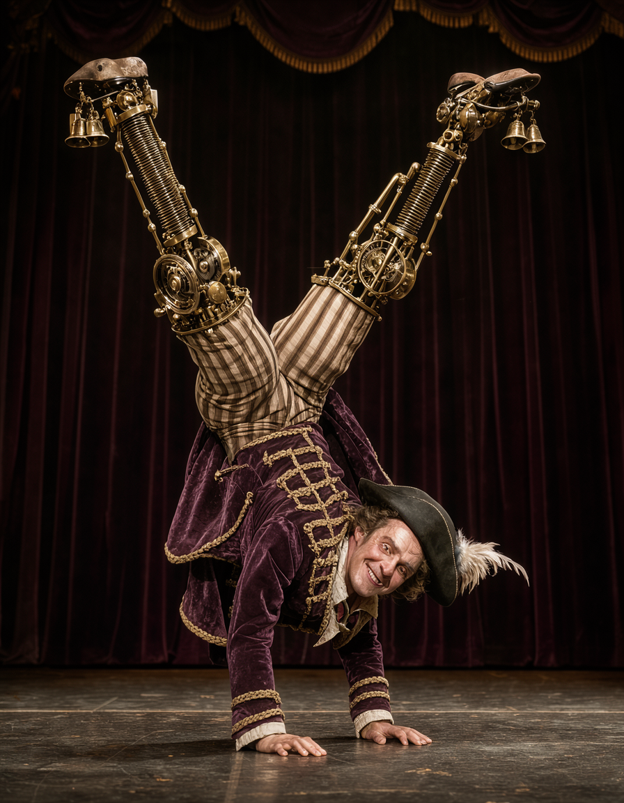
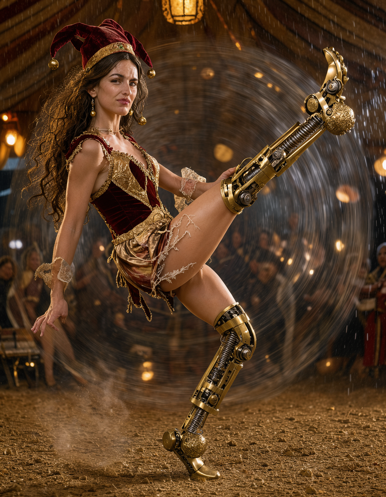

Generated locally via FLUX 3 (Radeon RX 9070 XT) for the open Tae Kwon Do fighter slot in Pitfighter. Compare the 5 distinct Victorian steampunk archetypes with separate Male and Female designs below.
High-altitude church spire rigger who treats vertical height as a weapon. Fights on telescoping spring-steel railway leaf springs and forged climbing crampons with soaring drop-kicks and rafter axe kicks.


Obsessive East End bootmaker engineered to deliver the "mechanically perfect human kick." Delivers rapid-fire staccato machine-gun kicks with solid cast-iron shoe lasts, measuring calipers, and heavy steel-welted brogues.


Victorian knocker-up and sluice wader on 7-foot articulated telescoping brass and iron stilts. Commands extreme reach with sweeping 360-degree crescent kicks leaving roaring arcs of gas flame in the fog.


Acrobatic dockland runner fitted with dual-action pneumatic steam-piston legs. Explosive, twitchy Tae Kwon Do with flying switch-kicks, sliding sweeps, and clouds of hissing steam.


Flamboyant carnival contortionist on internal gyroscopic flywheel legs with chiming brass bells. Blends theatrical capoeira with spinning inverted Tae Kwon Do tricking.

